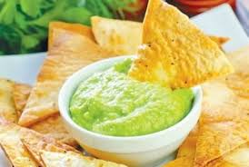

Гуакамоле
Гуакамоле — популярное блюдо мексиканской кухни. Основа соуса — авокадо и сок лайма (или лимона). Очень важно использовать спелое авокадо, от него зависит вкус соуса. Чаще всего этот соус подают к кукурузным чипсам.
Ингридиенты:

2 авокадо (около 350 г)
200 г помидоров
100 г лука
3 ст.л. сока лайма (или лимона)
половина перчика чили (по желанию)
2–3 зубчика чеснока
соль
Приготовление
Лук и чеснок мелко порубить.
Чили очистить от семян, мелко нарезать.
Помидоры очистить от кожицы, мелко нарезать.
Авокадо почистить, удалить косточку.
Размять мякоть авокадо, добавить сок лайма, перемешать.
Добавить помидоры, перемешать.
Добавить лук и чеснок, перемешать.
Добавить чили, перемешать.
По желанию, соус можно измельчить в блендере.